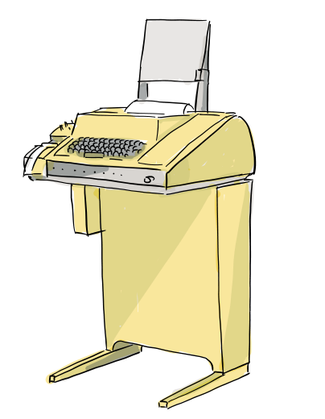

原文：F/OSS Comics 第 12 篇《BSD Unix, Part 2 — The Birth of the vi Editor》，Joone Hur 绘，2026 年 10 月 11 日
原文链接：https://fosscomics.com/posts/12.%20BSD%20Unix%20Part%202%20-%20The%20Birth%20of%20the%20vi%20Editor
本文为完整中文翻译，保留原文的旁白、对话、ed 会话代码块与 References。⭐ 标记处为译者补充。
⭐ 本文是 F/OSS Comics 五部曲的第四篇，也是 BSD 三部曲的第二篇。

开篇
⭐ 旁白：
「1975 年，Ken Thompson 回到母校 UC Berkeley 做访问教授休假。他当时正设法让 Unix Version 6 在新的 PDP-11/70 上跑起来。[2]」
（对话：）
「那是 Ken Thompson。他创造了 Unix。也许我们能帮上忙。」
「那两位是谁？他们跟了我好几天了。」
「PDP-11/70 的机房。」
「教授，需要我们帮忙吗？」
「终于见面了。」
「哈！事情多着呢。」
「我正在改进一个 Pascal 解释器。要来帮忙吗？」
「当然！」
⭐ 旁白：
「Bill Joy 和 Chuck Haley 改进了这个 Pascal 系统，让程序编译更快、运行更快。它在学生中流行了起来。[2]」
vi 的诞生
⭐ 旁白：
「Unix 自带 ed —— 一个 Thompson 在 1969 年 Unix 早期开发时写的行编辑器。[4]」
（对话：）
「ed 用起来很奇怪吧？」
「我是给电传打字机写的。对我来说还好用……」
「等等……用 ed 怎么编辑文档？」
⭐ 旁白：
「这是一个简短的 ed 会话。命令、输入的文本和输出混在一起。$ 提示符属于 shell；ed 本身通常没有提示符。[6]」
（ed 会话：）
$ ed
a
ed is the standard Unix text editor.
This is line number one.
.
,p
ed is the standard Unix text editor.
This is line number one.
2s/one/two/
,p
ed is the standard Unix text editor.
This is line number two.
w text
62
q
$ cat text
ed is the standard Unix text editor.
This is line number two.⭐ 旁白：
「a 命令开始追加文本。单独一行一个句点结束输入。命令,p打印缓冲区里的每一行。[6]」
「要把第二行的 one 改成 two，你输入2s/one/two/。你不必把光标移到文本上，而是指定行号和替换内容。然后w text把缓冲区存成名为 text 的文件，并报告它的字节数；q退出。」
⭐ 旁白：
「得到的文件内容是：」
`
ed is the standard Unix text editor.
This is line number two.
`
「1960 年代内存稀缺、调制解调器缓慢。许多终端是把内容打印在纸上，而不是显示在屏幕上。短命令式的编辑器在这样的终端上是合理的设计。[4]」
（图注：Teletype Model 33，一种广泛使用的打印终端。）

⭐ 旁白：
「到了 1970 年代，带 CRT 屏幕的终端开始普及。而 Unix 用户还在用 ed 编辑。」
（对话：）
「我们已经有屏幕了，为什么还要这样编辑？」
⭐ 旁白：
「1976 年夏天，George Coulouris 从 Queen Mary College 访问伯克利。[5]」
（对话：）
「Bill！他的编辑器 em 可以直接在屏幕上编辑一行。这正是我需要的。」
「这是 em 的源码磁带。它会展示 em 如何处理视频终端。」
「谢谢您，教授。」
⭐ 旁白：
「Joy 和 Haley 在 em 的基础上开发出了 ex。1977 年，Joy 加上了后来成为 vi 的全屏可视模式。[2][3]」
（对话：）
「现在我要给 ex 加一个全屏可视模式。」
「用可视模式写代码有趣多了。」
⭐ 旁白：
「可视模式在 BSD 用户中流行开来。用 vi 命令启动编辑器会直接进入可视模式。你今天仍然可以在 vi 里使用 ex 命令。[3]」
西海岸 Unix 用户组
⭐ 旁白：
「回到 Thompson 在伯克利的时期，1975-1976 年。」
⭐ 旁白：
「Thompson 也分享自己的知识。在西海岸 Unix 用户组（West Coast Unix Users Group）早期的一次聚会上，他花了几个晚上，带着与会者逐行讲解内核源码。[1]」
（对话：）
「大家都把打印稿带来了吗？」
「太长了！」
⭐ 旁白：
「那种分享代码、解释它如何工作的传统，延续进了 BSD，并进入了更广泛的自由开源软件社区。不过在当时，Unix 源码与早期 BSD 发行版只在持有 AT&T 源码许可证的人之间流通。[1][2]」
⭐ 旁白：
「1976 年夏天结束时，Thompson 结束休假回到贝尔实验室。[2]」
（对话：）
「再见，教授！」
「回贝尔实验室去了。快乐的黑客！」
References
- Andrew Leonard,《BSD Unix: Power to the people, from the code》, 2000.
- Marshall Kirk McKusick,《Twenty Years of Berkeley Unix》, in Open Sources: Voices from the Open Source Revolution, 1999. The Korean edition, referenced in the original comic, was published by Hanbit Media, 2013.
- vi (text editor), Wikipedia.
- ed (text editor), Wikipedia.
- George Coulouris,《Bits of History》, a firsthand account of em and his 1976 visit to Berkeley.
- GNU ed manual.
⭐ 译者按：三点补充
一、⭐⭐⭐ 而「短命令」不是缺点，是约束的产物
⭐ 原文这句是全篇的技术核心：
「1960 年代内存稀缺、调制解调器缓慢。许多终端是把内容打印在纸上，而不是显示在屏幕上。短命令式的编辑器在这样的终端上是合理的设计。[4]」
⭐ 而 Thompson 那句回答更妙：
「我是给电传打字机写的。对我来说还好用……」
⭐ 我认为这一点值得展开，因为它解释了现代编辑器「什么都能做」的历史反面：
| ed 的时代 | 现代编辑器 | |
|---|---|---|
| 输入介质 | ⭐ 纸带 / 电传打字机（每次修改都要重新打印整页）** | 屏幕 |
| 带宽 | ⭐ 300 baud 级别的拨号线路 | 本地 |
| 成本 | ⭐ 每一行输出都要花钱和时间 | 零 |
| ⭐ 因此的设计取向 | ⭐ 「尽量少输出」 | 无所谓 |
⭐ 而这个约束遗产一直留到了今天 —— ⭐ vi/ex 那套「:w、:%、q」的语法，本质上是「在昂贵的输出介质上省字符」的产物。**
二、⭐⭐ 而 em 的引入是「外部视角」带来的
⭐ 原文这一段我觉得是全篇最好的叙事节拍：
「1976 年夏天，George Coulouris 从 Queen Mary College 访问伯克利。」
「Bill！他的编辑器 em 可以直接在屏幕上编辑一行。这正是我需要的。」
「这是 em 的源码磁带。它会展示 em 如何处理视频终端。」
⭐ 请注意这四句话里发生了什么：⭐ 一个从外面来的人，带着「屏幕已经普及了」这个外部事实，走进了还在用电传打字机逻辑的圈子。**
⭐ 而 em 带来的不是「更好的编辑器」，而是「一种新的交互模型」 —— 而且它是以源码磁带的形式被带进来的。
⭐ 我认为这和上一部曲里 Unix 进入伯克利的路径完全同构 —— ⭐ 而这正是整个系列反复讲的那件事。**
三、⭐⭐ 而「把内核源码逐行讲给大家」这个场景，才是这一系列真正的题眼
⭐ 原文那句：
「那种分享代码、解释它如何工作的传统，延续进了 BSD，并进入了更广泛的自由开源软件社区。」
⭐ 我想请读者注意这句话的时态 —— 是「延续进了」，不是「始于」。
⭐ 也就是说：⭐ 「读代码、讲代码、然后把改好的版本传出去」这个做法，比「自由软件」这个词本身古老得多。 它至少可以追到 1975-1976 年的西海岸 Unix 用户组。**
⭐ 而这正是本号系列导读里那个判断的来源 —— ⭐ 自由软件运动在技术上真正继承的，不是许可证文本，而是这个具体做法。**
关于本系列
| # | 标题 | 发布 |
|---|---|---|
| 9 | Unix 哲学 | 2026-08-22 |
| 10 | Dennis Ritchie 生平 | 2026-09-26 |
| 11 | BSD Unix 第一部：Unix 源码进入伯克利 | 2026-09-30 |
| 12 | BSD Unix 第二部：vi 的诞生（本文） | 2026-10-11 |
| 13 | BSD Unix 第三部：BSD 的开端 | 2026-10-30 |
⭐ 系列导读见《一条磁带如何长成一个操作系统：F/OSS Comics 的 Unix 与 BSD 五部曲（系列导读）》。
（说明：本文为原文的完整中文翻译，保留原文的旁白、对话、ed 会话与 References；译者按三节为笔者补充。）

点评与讨论
GITHUB 账号登录有疑问、有补充、有不同看法？欢迎留下你的点评，一起把技术聊透。👇